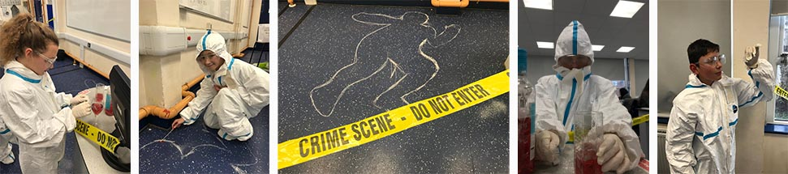

The word 'Science' probably makes you think of many different things. An old man with crazy white hair, coloured liquids bubbling in beakers, white lab coats, microscopes, Bunsen burners, astronomers studying the night sky with a telescope, biologists finding new species of plants and animals in a rainforest, boggling equations scrawled on a blackboard.
These images only hint at what Science truly is. Science asks questions about the world in which we live. These include questions about atoms, ecosystems, viruses, new energy resources, galaxies, about how things worked in the past and how things might work in the future.
We already have a huge collection of scientific knowledge that is used to try and explain the world around us but it is a collection that is constantly being improved and added to. Science is an on-going process. There will always be new questions that need answering and hence there will always be the need for fresh ideas and future investigation.